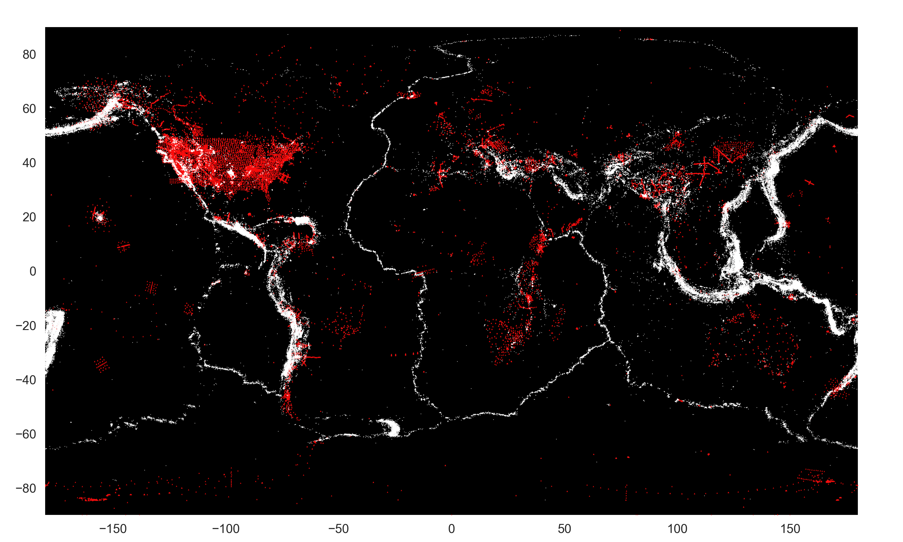

Introduction
Earthquakes information are usually available through IRIS and USGS open-data; however, the way of data querying is limited and sometimes complicated. To facilitate earthquake research, I made a MySQL databse, which is a unique copy of the global seismic events from USGS (since 2010), and the station, network information from IRIS.

Seismic events (white) and stations (red) in the database
226,410 events with M3.0+
992 networks and 57,575 stations
8,173,763 event-station pairs
APIs
Search earthquake by State name
Group by earthquakes in each state or searth events with multiple filters
Search events recorded in a specific station
Search events products
Details
Currently the DB is focusing on the earthquake and station contents. From a database management view, a person table can help track the event products easily, and the institude (i.e. USGS, SCEC, NCEC, PNSN etc) is also built-in the DB for the future usage. An ER model design is shown below.
Link to the DB
https://ix.cs.uoregon.edu/~jiunting/seismic/ (Last available 12/21/21)